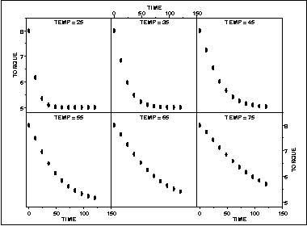

|
1.
Exploratory Data Analysis
1.3. EDA Techniques 1.3.3. Graphical Techniques: Alphabetic 1.3.3.26. Scatter Plot
|
|||
|
Purpose: Check pairwise relationship between two variables conditional on a third variable |
A conditioning plot, also known as a coplot or subset plot,
is a plot of two variables conditional on the value of a third
variable (called the conditioning variable). The conditioning
variable may be either a variable that takes on only a few
discrete values or a continuous variable that is divided into
a limited number of subsets.
One limitation of the scatterplot matrix is that it cannot show interaction effects with another variable. This is the strength of the conditioning plot. It is also useful for displaying scatter plots for groups in the data. Although these groups can also be plotted on a single plot with different plot symbols, it can often be visually easier to distinguish the groups using the conditioning plot. Although the basic concept of the conditioning plot matrix is simple, there are numerous alternatives in the details of the plots.
|
||
| Sample Plot |

In this case, temperature has six distinct values. We plot torque versus time for each of these temperatures. This example is discussed in more detail in the process modeling chapter. |
||
| Definition |
Given the variables X, Y, and
Z, the conditioning plot is formed by dividing the values
of Z into k groups. There are several ways that
these groups may be formed. There may be a natural grouping of the
data, the data may be divided into several equal sized groups, the
grouping may be determined by clusters in the data, and so on. The
page will be divided into n rows and c columns where
nc ≥ k.
Each row and column defines a single scatter plot.
The individual plot for row i and column j is defined as
|
||
| Questions |
The conditioning plot can provide answers to the following
questions:
|
||
| Related Techniques |
Scatter plot Scatterplot matrix Locally weighted least squares |
||
| Software | Conditioning plots are becoming increasingly common in general purpose statistical software programs, including R and Dataplot. If a software program does not generate conditioning plots, but it does provide multiple plots per page and scatter plots, it should be possible to write a macro to generate a conditioning plot. | ||